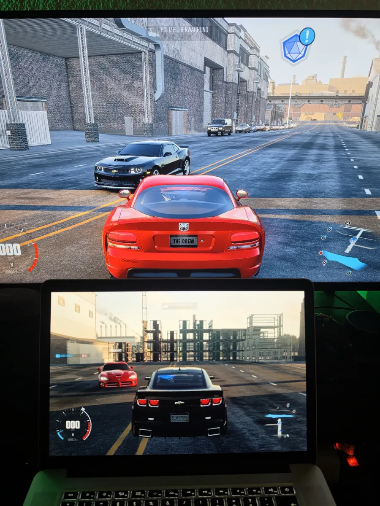

Download
Everyone needs the server. Add the patch for the platform you play on.
-
For everyone
Server
Windows · macOS · Linux
Download
- Unpack the zip on a computer in your home network.
- Windows: double-click start-server.bat. macOS and Linux: run ./start-server.sh in a terminal.
- Keep the window open while you play.
-
PS4 · PS5
Console patch
GoldHEN · CUSA00161 1.21
Download
- Copy CUSA00161.xml to /data/GoldHEN/patches/xml/ on the console.
- Switch on “Offline server redirect” in GoldHEN's patch menu.
- Start the server first, then the game.
-
PC
PC patch
Ubisoft Connect · TheCrew.exe 1.2.0.0
Download
- Copy dinput8.dll and reborn.ini into the game folder, next to TheCrew.exe.
- Start the server first, then the game.
- To continue your PS4 progress, set Name in reborn.ini to your PS4 user name.
Supported versionsRelease notes and all filesReport a bugFree of charge. The server is open source (GPL 3).
See it running
Recorded in November 2026. The story on a PS4 from a new save, up to the first tuned car, then a crew with a PS4 and a PC player.
Crossplay, cross-save, cross-progression
One server for PS4 and PC. Play together across platforms, and take your progress from the console to the PC and back.
- CrossplayTested on PS4 and PCPS4 and PC players meet in the same world, see each other and drive in one crew.
- Cross-saveTested from PS4 to PCYour save lives on your server, not on the console: level, money, cars and missions. Start on the PS4, carry on at the PC.
- Cross-progressionWhat you earn on one platform counts on the other, because both play the very same save.
One save on PS4 and PC: how it works
- Play on the PS4 as usual. The server keeps your save under your PS4 user name.
- On the PC, open reborn.ini next to TheCrew.exe and set Name= to that PS4 user name, spelled exactly the same.
- Start the game on the PC. It loads the same level, money, cars and missions. Works the other way round too.
One name plays on one device at a time: the server refuses a second game with the same name (it shows error #0_35), so two games never write the same save.
Where the trip stands
The game boots on PS4 and PC, the world loads, progress is saved, and players on both platforms drive together in one crew. The pre-release is out; what is built but untested gets tested one by one.
Back on the road
The game starts and connects to the Reborn server instead of the shut-down official one.
Into the world
Login, free roam across the map, progress saved after every event.
Missions and rewards
Story missions pay out, you level up and unlock perks.
Cars and tuning
Dealers, tuner specs and the garage work, and every car loads again after a restart.
PC version
The PC game runs on the same server as the PS4: a small file in the game folder points it there. Login, the prologue and the open world work.
Online multiplayer and crossplay Tested on PS4 and PC
PS4 and PC players meet on your own server, see each other and drive together. Since 5 November crews work across platforms too: a PS4 player invites a PC player, the invite goes through and the crew lead changes hands.

First crossplay test: the PS4 (top) and the PC (bottom) see each other. Watch the crossplay crew video Watch the first clip on YouTubePre-release: download and try it Out now
The server is open source and runs on Windows, macOS and Linux; the console patch and the PC file come with it. Every activity and the whole story are built, but not all of it is tested yet. Expect bugs, and please report them.
Every activity, tested
Summit events, police chases, factions and the parts shops calculate like the original server. Each one gets tested on PS4 and PC.
Release 1.0
The whole story played from start to finish, every activity tested, and a step-by-step guide.
Server on the console
Later: everything runs on the PS4 itself, no second device needed.
Working today
- Starts without the official servers
- Story missions and free roam
- Missions, rewards, level-ups and perks
- Buying cars at the dealer
- A garage that keeps your cars
- Street spec upgrades at the tuner
- Progress saved on the server, one save per PS4 profile
- Settings saved on the console, per profile
- Console and PC find the server on your network by themselves
- Fake online drivers on or off, your choice
- The summit calendar shows the summit of the week
- DLC cars from the DLC you own
- Your PSN profile picture in the game
- Tuned cars load again after a restart
- On PC: login, the prologue and the open world, on the same server as the PS4
- Multiplayer: PS4 and PC players meet on one server and see each other
- Crews across PS4 and PC: invite a player from the other platform
- Cross-save: one save on PS4 and PC under the same player name
Built, waiting for its first test
- No more kick for standing still
- Several consoles on one home server
- Summit events, entry and rewards
- Factions, the daily bonus and a faction war that keeps running around the clock
- Police chases: rewards for escaping, fines for getting caught
- Buying cars at every dealer on the map
- Parts shops and fitting parts in the garage
- Buying perk points
- Collectibles kept, complete sets unlock parts, a car for every region's landmarks
In the garage
- Reward parts from missions
- Rivals on the leaderboards, with times no better than the medals allow
- The remaining mission types
Further down the road
- More game regionsThe US and Asian releases of the PS4 game, next to the European version 1.21.
- Single-player cheatsUnlimited money, every car and every part unlocked, for when you just want to cruise. Single player only; in multiplayer everyone plays fair.
- Up to 4K on PS4 Pro and PS5A patch raises the render resolution. Same world, a much sharper picture.
From the road
Scenes recorded on a PS4 playing on the Reborn server.
What you'll need
- Your own copy of The Crew for PS4 or PCPS4: disc or download, the European version with update 1.21. PC: the Ubisoft Connect version. The exact versions are listed below.
- On console: a PS4 or PS5 that runs homebrew game patchesThe patch points the game at your server. On PC a small file in the game folder does the same.
- A computer on the same networkWindows, macOS or Linux with Python. It runs the server while you play.
Supported versions
- PS4
- The Crew, European version CUSA00161, version 1.00 with update 1.21 installed (the game info shows 01.21). Tested on a PS4 with firmware 11.50 and GoldHEN.
- PC
- Ubisoft Connect version: TheCrew.exe 1.2.0.0, build 502193, the last update. Tested on Windows 11.
- Server
- Windows, macOS and Linux with Python 3.10 or newer; the start script installs Python on Windows and macOS.
Might work, not tested yet: the Steam version for PC and the PS5 through backwards compatibility. Not yet: other PS4 regions and game versions, because the patch fits only CUSA00161 with update 1.21.
No game files are provided. You need your own copy; the project contains only original code. The README in the download explains the setup.
Questions
Do I need PS Plus?
No. The game talks to your own server only.
Where do I get the game?
You need your own copy of The Crew. On PS4 the disc is still easy to find second-hand; install it with update 1.21. On PC you need the Ubisoft Connect version that you own and have installed. This project provides no game files, no download links and no help with copies you don't own.
Does it run on PS5?
Yes. The PS5 plays the PS4 version through backwards compatibility, with the same patch and the same server.
Where is my progress stored?
On your server, one save per PS4 profile or PC player name. Your game settings stay on the console or PC.
Can I play with friends?
Yes, with crossplay between PC and PS4: you see each other in the world and play in one crew. Playing over the internet is not tested yet.
Can I take my PS4 progress to the PC?
Yes. Saves are kept on your server by player name. Set Name in reborn.ini on the PC to your PS4 user name and the PC plays the same save: level, money, cars and missions. One name plays on one device at a time; a second login with it shows error #0_35.
Is there a PC version?
Yes. The PC game runs on the same server as the PS4 version: a small file in the game folder points it there. Login, the prologue and the open world work today; the file is in the PC download of the pre-release. You need your own copy of the PC game: the Ubisoft Connect version works, the Steam version is being tested.
When can I download it?
Now: pre-release 0.0.1 is in the download section at the top of this page, with the server for Windows, macOS and Linux, the PS4 patch and the PC patch. Not everything is tested yet; release 1.0 follows once the whole story is played through.
Can I support the project?
Yes, with a tip on Ko-fi. The project stays free either way, and supporting it unlocks nothing extra. Support on Ko-fi
Contact
The Crew Reborn is a fan project by Knutwurst. Questions, bug reports and ideas are welcome; for anything that does not belong in the issue tracker, there is an e-mail address.
- Bugs and ideasReport them in the issue tracker on GitHub, with a short description and the server's captures folder.Open the issue tracker
- Source codeThe server is open source. Everything about it, from the code to the releases, lives on GitHub.thecrewreborn/server on GitHub
- Videos and supportProgress videos on YouTube; a tip on Ko-fi helps, but the project stays free either way.YouTube @KnutwurstKo-fi